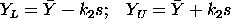
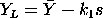
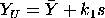
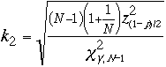
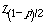
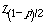
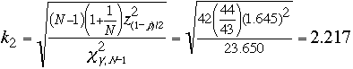
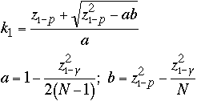
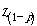
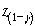

7.
Product and Process Comparisons
7.2.
Comparisons based on data from one process
7.2.5.
What intervals contain a fixed percentage of the population values?
7.2.5.3.
|
Tolerance intervals for a normal distribution
|
|
|
Definition of a tolerance interval
|
A confidence interval covers a population parameter with
a stated confidence, that is, a certain proportion of the time. There is
also a way to cover a fixed proportion of the population with a stated
confidence. Such an interval is called a tolerance interval. The
endpoints of a tolerance interval are called tolerance limits. An
application of tolerance intervals to manufacturing involves comparing
specification limits prescribed by the client with tolerance limits that
cover a specified proportion of the population.
|
|
Difference between confidence and tolerance intervals
|
Confidence limits are limits within which we expect a given population
parameter, such as the mean, to lie. Statistical tolerance limits
are limits within which we expect a stated proportion of the population
to lie. Confidence intervals shrink towards zero as the sample size
increases. Tolerance intervals tend towards a fixed value as the sample
size increases.
|
|
Not related to engineering tolerances
|
Statistical tolerance intervals have a probabilistic interpretation.
Engineering tolerances are specified outer limits of acceptability
which are usually prescribed by a design engineer and do not necessarily
reflect a characteristic of the actual measurements.
|
|
Three types of tolerance intervals |
Three types of questions can be addressed by
tolerance intervals. Question (1) leads to a two-sided interval; questions
(2) and (3) lead to one-sided intervals.
-
What interval will contain p percent of the population measurements?
-
What interval guarantees that p percent of population measurements
will not fall below a lower limit?
-
What interval guarantees that p percent of population measurements
will not exceed an upper limit?
|
| Tolerance intervals for
measurements from a normal distribution |
For the questions above, the
corresponding tolerance intervals are defined by lower (L) and upper (U)
tolerance limits which are computed from a series of measurements Y1,
...,
YN :
-

-

-

where the k factors are determined so that the intervals cover at
least a proportion p of the population with confidence, . . |
| Calculation of k factor for a two-sided tolerance
limit for a normal distribution |
If the data are from a normally distributed
population, an approximate value for the factor as a function of p
and for a two-sided
tolerance interval (Howe, 1969)
is

where is the critical value of the chi-square
distribution with degrees of freedom, N - 1, that is exceeded
with probability
and is the
critical
value of the normal distribution which is exceeded with probability
(1-p)/2.
is the critical value of the chi-square
distribution with degrees of freedom, N - 1, that is exceeded
with probability
and is the
critical
value of the normal distribution which is exceeded with probability
(1-p)/2. |
| Example of calculation |
For example, suppose that we take a sample of
N = 43 silicon wafers from a lot and measure their thicknesses in
order to find tolerance limits within which a proportion p = 0.90
of the wafers in the lot fall with probability
= 0.99. |
| Use of tables in calculating two-sided tolerance
intervals |
Values of the k factor as a function
of p and
are tabulated in some textbooks, such as Dixon
and Massey (1969). To use the tables in this handbook, follow the steps
outlined below:
-
Calculate
 = (1 - p)/2 = 0.05
= (1 - p)/2 = 0.05
-
Go to the table of upper critical
values of the normal distribution and under the column labeled 0.05
find
= 1.645.
-
Go to the table of lower critical
values of the chi-square distribution and under the column labeled
0.99 in the row labeled degrees of freedom = 42, find
= 23.650.
-
Calculate

The tolerance limits are then computed from the sample mean,,
and standard deviation, s, according to
case
(1). |
| Important note |
The notation for the critical value of the chi-square
distribution can be confusing. Values as tabulated are, in a sense, already
squared; whereas the critical value for the normal distribution must be
squared in the formula above. |
| Dataplot commands for calculating the k factor for a
two-sided tolerance interval
|
The Dataplot commands are:
let n = 43
let nu = n - 1
let p = .90
let g = .99
let g1=1-g
let p1=(1+p)/2
let cg=chsppf(g1,nu)
let np=norppf(p1)
let k = nu*(1+1/n)*np**2
let k2 = (k/cg)**.5
and the output is:
THE COMPUTED VALUE OF THE CONSTANT K2 = 0.2217316E+01
|
|
Another note
|
The notation for tail probabilities in Dataplot is the converse of the
notation used in this handbook. Therefore, in the example above it is
necessary to specify the critical value for the chi-square distribution,
say, as chsppf(1-.99, 42) and similarly for the critical value for the
normal distribution.
|
|
Direct calculation of tolerance intervals using Dataplot
|
Dataplot also has an option for calculating
tolerance intervals directly from the data. The commands for producing
tolerance intervals from twenty-five
measurements of resistivity from
a quality control study at a confidence level of 99% are:
read 100ohm.dat cr wafer mo day h min op hum ...
probe temp y sw df
tolerance y
Automatic output is given for several levels of coverage, and the tolerance
interval for 90% coverage is shown below in bold:
2-SIDED NORMAL TOLERANCE LIMITS: XBAR +- K*S
NUMBER OF OBSERVATIONS = 25
SAMPLE MEAN = 97.069832
SAMPLE STANDARD DEVIATION = 0.26798090E-01
CONFIDENCE = 99.%
COVERAGE (%) LOWER LIMIT UPPER LIMIT
50.0 97.04242 97.09724
75.0 97.02308 97.11658
90.0 97.00299 97.13667
95.0 96.99020 97.14946
99.0 96.96522 97.17445
99.9 96.93625 97.20341
|
|
Calculation for a one-sided tolerance interval for a normal
distribution
|
The calculation of an approximate k factor for one-sided tolerance
intervals comes directly from the following set of formulas
(Natrella, 1963):

where  is the
critical value from the normal
distribution that is exceeded with probability 1-p and

is the critical value from the
normal distribution that is exceeded with probability
1-.
|
|
Dataplot commands for calculating the k factor for a
one-sided tolerance interval
|
For the example above, it may also be of interest to guarantee with
0.99 probability (or 99% confidence) that 90% of the wafers have
thicknesses less than an upper tolerance limit. This problem falls under
case (3), and the Dataplot commands for
calculating the factor for the one-sided tolerance interval are:
let n = 43
let p = .90
let g = .99
let nu = n-1
let zp = norppf(p)
let zg=norppf(g)
let a = 1 - ((zg**2)/(2*nu))
let b = zp**2 - (zg**2)/n
let k1 = (zp + (zp**2 - a*b)**.5)/a
and the output is:
THE COMPUTED VALUE OF THE CONSTANT A = 0.9355727E+00
THE COMPUTED VALUE OF THE CONSTANT B = 0.1516516E+01
THE COMPUTED VALUE OF THE CONSTANT K1 = 0.1875189E+01
The upper (one-sided) tolerance limit is therefore
97.07 + 1.8752*2.68 = 102.096.
|